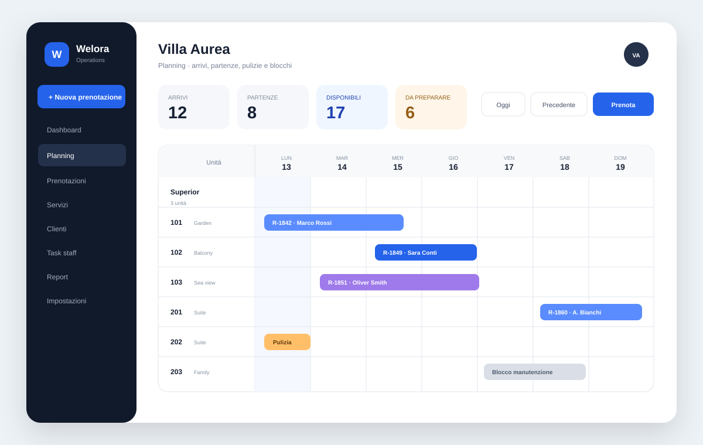
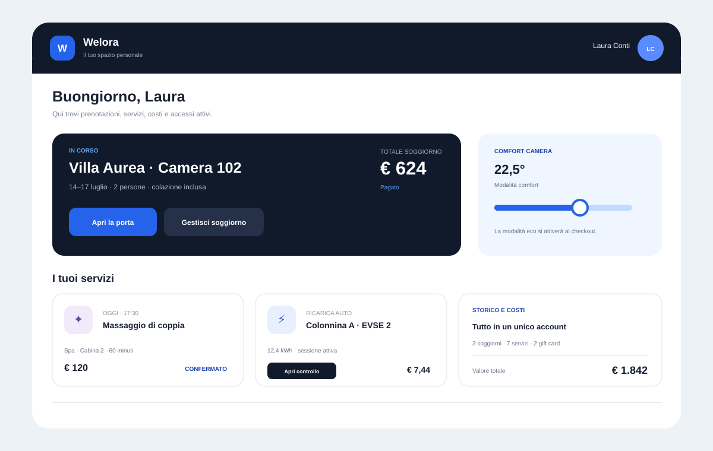
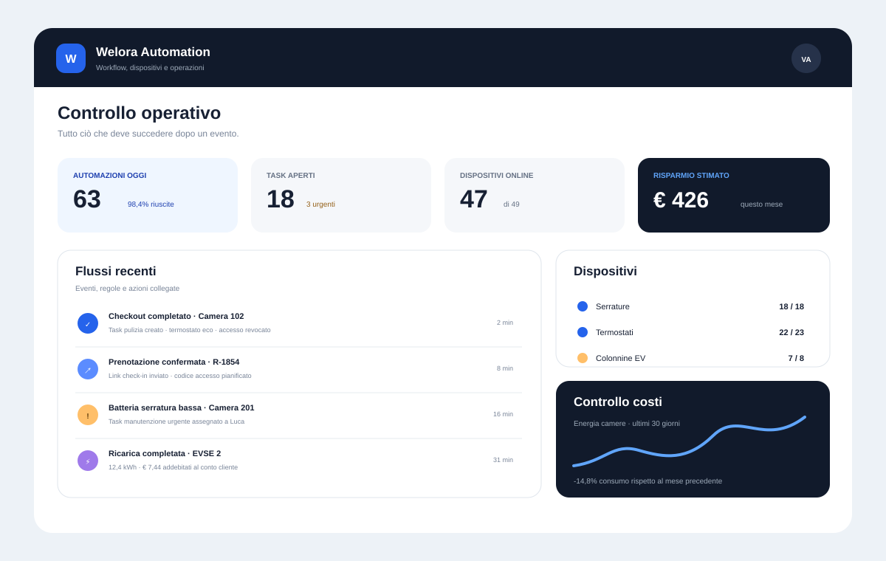
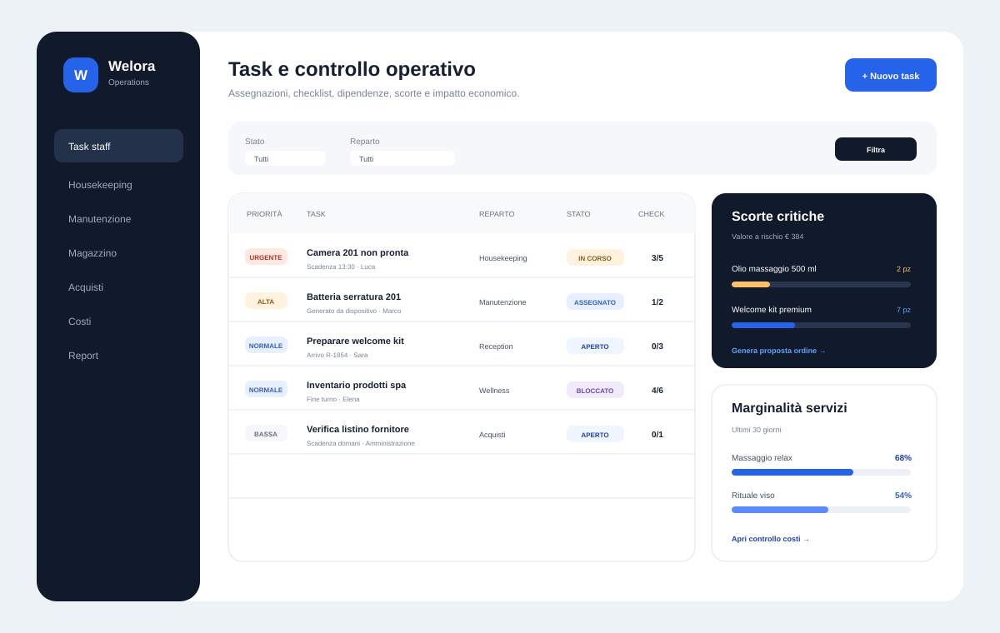

Pre-lancio · arrivo previsto 15 febbraio 2027
Tutto il gestionale della tua struttura. €29 al mese, tutto incluso.
PMS, canali OTA, check-in, pagamenti e POS, fatture, pulizie, cassa e automazioni sugli stessi dati. Non paghi moduli né piani superiori: paghi in più solo ciò che ha un costo reale, come i canali OTA aggiuntivi.
Tutte le funzioni inclusePassi da altri gestionali senza perdere datiNessuna commissione sulle prenotazioni dirette
OggiBuongiorno, Villa Aurea
MR+2
AndamentoRicavi e prenotazioni
7 giorniFlusso check-in3 passaggi completati
Dati ospite e documenti raccolti
Pagamento verificato. Identificazione da completare secondo la modalità prevista dalla struttura.
Adempimenti pronti
Automazione completataTask pulizia assegnato
Incasso Tap to Pay*€ 86,00
Per chi oggi usa troppi strumenti
Il problema non è avere poche camere. È dover comprare troppi software.
Costi che si sommano
PMS, booking engine, pagamenti, adempimenti, fatture e automazioni vengono spesso venduti come prodotti o add-on separati.
Dati copiati a mano
La stessa prenotazione passa da portali, fogli, messaggi e strumenti diversi, aumentando errori e tempo perso.
Le funzioni utili arrivano troppo tardi
L'automazione serve fin dall'inizio, non solo quando ci si può permettere un piano enterprise.
Quanto paghi oggi
Le stesse funzioni, comprate separatamente, costano da €150 a €400 al mese.
Ogni strumento ha il suo abbonamento. Welora li riunisce in un solo canone, perché aggiungere una funzione non ci costa di più. Togli ciò che non usi e inserisci quanto paghi davvero.
Risparmio stimato in un anno€ 2.472Oggi, al mese€ 245 Con Welora, al mese€ 39
Importi indicativi e modificabili. Welora: €29/mese + €10 per ogni canale OTA oltre il primo, IVA esclusa. Le commissioni dei provider esterni (pagamenti, verifica identità, OTA) sono escluse in entrambi i casi.
Blocca il -50% per 12 mesiOgni struttura, flussi completi
Welora segue il modo in cui lavori davvero.
Dal soggiorno alla vendita di un servizio indipendente, ogni operazione usa la stessa anagrafica, lo stesso conto e le stesse regole.
B&B e affittacamere
Gestisci soggiorno, incasso e adempimenti senza cambiare software.
PMS, booking engine, canali, portale ospite, check-in digitale e automazioni condividono la stessa prenotazione.
- Planning, tariffe, disponibilità e prenotazioni
- Check-in digitale e adempimenti con costi provider a consumo*
- Pagamenti online e Tap to Pay da smartphone compatibile*
- Servizi, extra e vendite anche non collegate a una camera

Welora Base
Una base completa, non un catalogo di add-on.
Tutte le funzioni fanno parte del prodotto: niente moduli da sbloccare, niente piani superiori. Paghi in più solo ciò che ha un costo reale, come i canali OTA oltre il primo.
PMS, planning e prenotazioni
Soggiorni, camere, unità, disponibilità, tariffe, restrizioni, note e operatività quotidiana.
PMS · planning · disponibilità · tariffeBooking engine e canali
Vendita diretta senza commissione Welora e collegamenti ai canali supportati, con inventario e prenotazioni sincronizzati.
Booking diretto · OTA · sincronizzazioneCheck-in e adempimenti*
Raccolta dati e documenti, flusso di identificazione conforme alla modalità applicabile, preparazione di Alloggiati e statistiche.
Portale ospite · identità · Alloggiati · statistichePagamenti e POS da smartphone*
Checkout, preautorizzazioni, incassi e Tap to Pay su dispositivi compatibili tramite provider abilitato.
Pagamenti · preautorizzazioni · Tap to PayServizi, beni e conti generici
Vendi colazioni, transfer, parcheggi, prodotti, noleggi, trattamenti o altri servizi anche senza collegarli a una camera.
Extra · passanti · eventi · vendite autonomeCorrispettivi e fatturazione*
Documenti commerciali, flussi fiscali e fatturazione elettronica integrati; senza registratore fisico quando la modalità adottata e la normativa lo consentono.
Documenti · corrispettivi · FatturaPAAutomazioni operative
Eventi e regole attivano task, messaggi, accessi, housekeeping, pagamenti e sistemi esterni con retry e tracciamento.
Regole · task · accessi · messaggiMulti-sede e controllo
Gestisci più strutture, utenti, ruoli e servizi mantenendo dati separati per sede e una visione centrale quando serve.
Multi-sede · ruoli · report · auditOltre il PMS
Quello che di solito costa un altro software, qui è già dentro.
Reception, pulizie, cassa, migrazione dati e dispositivi lavorano sugli stessi dati di prenotazioni e conti.
Passa a Welora senza perdere dati
Importa da CSV o Excel contatti, prenotazioni attive e storiche, gruppi, camere, tariffe, prezzi per occupazione e bambini, saldi aperti. Anteprima correggibile riga per riga e conferma tutto-o-niente.
Import guidato · storico · saldiGiornata operativa e reception
Una coda di priorità per il turno: partenze scadute, arrivi, variazioni da verificare, messaggi in attesa. Checkout guidato, registro chiavi, orari concordati, consegne di turno e oggetti smarriti.
Priorità · checkout · chiavi · turniPulizie dal telefono
Regole automatiche per riassetto, pulizie intermedie e biancheria, ricalcolate quando cambiano date o camere. L'addetto vede sul telefono solo le sue camere, con checklist, blocchi e note alla reception.
Regole · app addetti · stato camereCassa e contabilità
Casse con apertura e chiusura turno, incassi misti e rimborsi, scadenziario, prima nota in partita doppia con scritture automatiche ed export per il commercialista.
Casse · prima nota · commercialistaClima, serrature e dispositivi*
Termostati dalla dashboard, avvisi se una camera non raggiunge la temperatura di comfort, serrature e dispositivi associati alle camere e attivati dagli eventi del soggiorno.
Termostati · serrature · automazioniAgenda servizi e professionisti
Trattamenti, esperienze e appuntamenti con professionisti, competenze, turni, assenze, cabine e risorse, buffer e controllo delle sovrapposizioni. Soggiorni e appuntamenti nello stesso sistema.
Agenda · professionisti · risorseIn arrivo · servizio separato
Digital Receptionist
Un operatore digitale che risponde agli ospiti con disponibilità, prezzi e regole reali di Welora, prepara proposte e passa la conversazione a una persona quando serve. Non è incluso nel canone Base: prezzo comunicato prima dell'attivazione.

Oltre la camera
Vendi e incassa anche ciò che non dipende da un soggiorno.
Una struttura ricettiva spesso vende molto più di un pernottamento. Welora gestisce servizi e beni con conti indipendenti, clienti passanti, aziende ed eventi, usando gli stessi pagamenti e flussi fiscali.
- Conti generici: servizi e vendite senza prenotazione camera.
- Catalogo unico: extra, prodotti, transfer, noleggi, esperienze e altri servizi.
- Stesso flusso: incasso, documento commerciale, fattura e storico cliente.
- Multi-sede: operatività locale e controllo centrale.
Automazioni operative
Ogni evento può attivare ciò che deve succedere dopo.
Le regole collegano prenotazioni, staff, messaggi, adempimenti, pagamenti e dispositivi. Il lavoro ripetitivo diventa un flusso tracciato, con retry e gestione degli errori.
OTAEmailWhatsAppPagamentiFiscalitàSerratureTermostatiOCPPAlloggiati WebStatistiche

Tre flussi, un solo sistema
Dalla prenotazione alla vendita al banco.
Arrivo ospite
Prenotazione, check-in e operazioni
Dati, pagamento, documenti, accessi e task partono dalla stessa prenotazione.

Vendita autonoma
Servizio o bene senza camera
Apri un conto, incassa e genera il documento previsto senza creare una prenotazione fittizia.
Multi-sede
Più strutture, regole coerenti
Ruoli e operatività restano separati per sede, con una visione centrale quando serve.
Pre-lancio Founding
Un solo prezzo. Tutte le funzioni incluse.
Welora Base costa €29/mese + IVA. Non ci sono moduli da sbloccare né piani superiori: paghi in più solo ciò che ha un costo reale anche per noi, indicato prima.
Welora Base
Tutto incluso
Per strutture che vogliono sostituire più strumenti con un unico sistema operativo, dalla singola sede ai gruppi più articolati.
29€ / mese + IVA
Founding: €14,50/mese per i primi 12 mesi dal go-live.
- PMS, planning e booking engine
- Prenotazione diretta e 1 canale OTA incluso
- Check-in digitale e adempimenti*
- Pagamenti e POS da smartphone*
- Fatture, corrispettivi e documenti*
- Giornata operativa, reception e pulizie
- Cassa, prima nota ed export commercialista
- Servizi, agenda e conti generici
- Automazioni e dispositivi*
- Import da altri gestionali
- Multi-sede, ruoli e audit
- Nessuna commissione Welora sulle prenotazioni dirette
Solo se servono
Costi reali, dichiarati prima
Paghi in più solo ciò che ha un costo anche per noi o per un provider esterno.
10€ / mese per canale OTA oltre il primo
- Canale OTA aggiuntivo: €10/mese + IVA
- Verifica identità: costo del provider a consumo*
- Pagamenti e Tap to Pay: commissioni del provider*
- Invio fatture e corrispettivi: costo del provider fiscale*
- Commissioni OTA: restano tra struttura e portale
- Digital Receptionist: servizio separato, in arrivo
Lancio commerciale previsto: 15 febbraio 2027.Programma Founding: primi 50 aderenti entro il 31 gennaio 2027, -50% sul canone Welora Base per 12 mesi dal go-live e prezzo di listino bloccato per i successivi 12 mesi. Nessun pagamento prima dell'attivazione; condizioni definitive confermate prima della sottoscrizione.
Sempre incluso: aggiornamenti, backup, ruoli e permessi, audit, accesso web e mobile ed esportazione dati. IVA esclusa. Costi e commissioni di provider esterni non sono inclusi.
* Welora Base include il collegamento a 1 canale OTA; ogni canale aggiuntivo costa €10/mese + IVA. Lo sconto Founding si applica al canone Base, non ai canali aggiuntivi. Possono applicarsi costi a consumo o commissioni del provider per verifica identità/check-in, pagamenti e Tap to Pay, OTA, servizi fiscali e altri servizi terzi. Il check-in digitale non sostituisce gli obblighi di identificazione previsti dalla normativa: la verifica dell'ospite deve essere svolta con la modalità richiesta nel caso concreto. L'uso senza registratore telematico fisico dipende dalla soluzione fiscale adottata e dai requisiti normativi applicabili.
Domande frequenti
Quello che devi sapere prima di aderire.
Prezzo, funzioni e tempi: le risposte rapide prima di aderire.
Per chi è Welora?
Per strutture ricettive di ogni dimensione: B&B, affittacamere, appartamenti e affitti brevi, residence, hotel con più reparti e gruppi multi-sede. Le funzioni sono le stesse per tutti.
Cosa include Welora Base?
PMS e planning, prenotazione diretta, 1 canale OTA incluso (ogni canale aggiuntivo €10/mese + IVA), portale ospite, check-in digitale, pagamenti, servizi e vendite autonome, fiscalità integrata, automazioni, ruoli e gestione multi-sede. Il prezzo può scalare con capacità e volumi, non con lo sblocco delle funzioni essenziali.
Posso usare il telefono come POS?
Sì, con smartphone e provider compatibili tramite Tap to Pay. Non serve un lettore separato nei casi supportati; restano applicabili le commissioni e i requisiti del provider.
Il check-in è completamente automatico?
Welora automatizza raccolta dati e documenti, passaggi di verifica, preparazione degli adempimenti e ricevute dove supportato. L'identificazione dell'ospite deve comunque rispettare gli obblighi applicabili; il provider di verifica può prevedere un costo per check-in.
Posso vendere un servizio o un bene senza associarlo a una camera?
Sì. I conti generici permettono di gestire passanti, clienti, aziende, eventi, servizi ed extra con incassi e documenti propri.
Posso gestire più sedi?
Sì. La piattaforma è multi-struttura: sedi, utenti, ruoli e dati possono essere gestiti separatamente, mantenendo una visione centrale. Le condizioni per i gruppi multi-sede vengono definite insieme prima della sottoscrizione.
Perché costa così poco?
Perché aggiungere una funzione non ci costa di più. Facciamo pagare il canone base e solo ciò che ha un costo reale, come i canali OTA oltre il primo o i servizi dei provider esterni, sempre indicati prima.
Posso portare i dati dal mio gestionale attuale?
Sì. L'importazione guidata da CSV o Excel porta in Welora contatti, prenotazioni attive e storiche, gruppi, camere, tariffe, prezzi e saldi aperti, con anteprima e correzioni prima della conferma.
Posso emettere documenti e fatture senza una cassa fisica?
Welora integra documenti commerciali, corrispettivi e fatturazione elettronica. L'assenza di un registratore telematico fisico è possibile soltanto quando la soluzione fiscale adottata e la normativa applicabile lo consentono; eventuali costi del provider fiscale restano separati.
Digital Receptionist è incluso?
No. È un servizio futuro separato, pensato per usare i dati reali di Welora nelle conversazioni e nei flussi autorizzati. Prezzo e data di disponibilità saranno comunicati prima dell'attivazione.
Quando sarà disponibile?
Il lancio commerciale è previsto per il 15 febbraio 2027. Il programma Founding raccoglie adesioni in pre-lancio e prevede il 50% di sconto per i primi 12 mesi dal go-live, nei limiti e alle condizioni indicate.
Chi c'è dietro
Welora nasce a Tolmezzo, in Friuli Venezia Giulia.
Un prodotto italiano, costruito attorno agli adempimenti, alla fiscalità e al lavoro quotidiano delle strutture italiane. Parli direttamente con chi lo sviluppa.
I tuoi dati restano tuoi
Esportazione dei dati sempre inclusa nel canone, insieme a backup, aggiornamenti, ruoli e audit.
Nessuna commissione sulle dirette
Quello che vendi dal tuo sito resta alla struttura: Welora non trattiene percentuali sulle prenotazioni dirette.
Onboarding seguito
Import dei dati, configurazione dei canali e primi passi li facciamo insieme. I Founding hanno la priorità.
Programma Founding
Prenota ora il -50% senza pagare prima dell'attivazione.
Ti contatteremo per verificare che Welora sia adatto ai tuoi flussi e per preparare l'onboarding prima del lancio.
✓ -50% per 12 mesi dal go-live✓ Prezzo di listino bloccato per altri 12 mesi✓ Priorità nell'onboarding